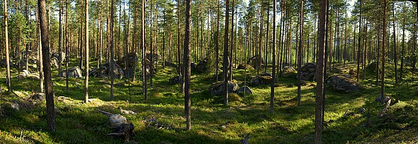

Lat: 64.011337 Long: 16.286888
Område med 20-30 flyttblock mitt mellan Hoting och Rossön. Stenkvaliteten är till stor del vittrad och vass men det finns även sånt som är snällt för fingrarna.
Från Hoting, well, ... du har kört för långt när du kommer till järnvägen, så vänd och följ Rossöbeskrivningen.
Några problem finns målade på stenarna med små pilar, andra problem är gjorda men inte uppmärkta. Denna sida kommer kompletteras med mer info efterhand.
[[Bild:Flybäcken_lillbronto.jpg|thumb|300px|right|
Peblin
på Lillbrontostenen.]] Lillbrontostenen ligger precis söder om Brontostenen. Gå rakt upp, 4 (FA
Peblin
).

Kantblocket ligger rätt ensamt nordost om Brontostenen. Följ den överhängande kanten till topps, 6A (FA
Peblin
). Fint problem men varning för riktigt elakt vass sten - räkna med skärsår vid uttoppningen.
Kategori:Bouldering
Kategori:Ångermanland
Kategori:Utkast
Copyright (C) Permission is granted to copy, distribute and/or modify this document under the terms of the GNU Free Documentation License, Version 1.3